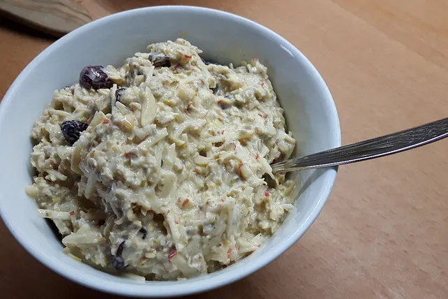

Powermüsli

Beschreibung
Hier ein Rezept vom meinem Powermüsli
Zutaten
- 1x reife Banane
- 2x TL Honig
- 1x EL Erdnussbutter
- 500g Naturjoghurt
- Vollkorn Früchtemüsli nach Wahl
Zubereitung
- Die reife Banane in einer Schüssel mit einer Gabel musen
- Den Honig in die gemuste Banane unterrühren
- Die Erdnussbutter auch unterrühren
- Den Naturjoghurt mit der Masse verrühren
- Das Vollkorn Früchtemüsli nach gewünschter Konsistenz hinzugeben und verrühren
Home